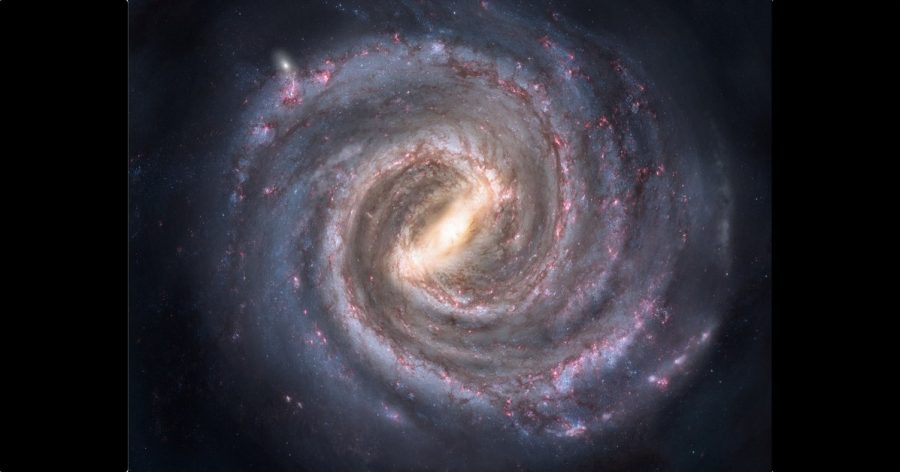

ကျွန်တော်တို့ မစ်ကီးဝေး ဂလက်ဆီ ကြယ်စုကြီးရဲ့ အလယ်ဗဟိုမှာ အလွန် ကြီးမားတဲ့ မဟာ တွင်းနက်ကြီး (Supermassive Black Hole) တစ်ခု ရှိနေပါတယ်။ ဒီ တွင်းနက်ကြီးကို Sagittarius A* ဆက်ဂျစ်တေးရီးယပ်စ် အေ လို့ အမည် ပေးထားပါတယ်။
ဒီ မဟာ တွင်းနက်ကြီးဟာ ကမ္ဘာကနေဆို အလင်းနှစ် ၂၆,၀၀၀ လောက် ကွာဝေးပါတယ်။ ဒီ တွင်းနက်ကြီးရဲ့ ဒြပ်ထုဟာ နေ အလုံးပေါင်း ၄ သန်းလောက် ပမာဏနဲ့ ညီမျှပါတယ်။
ဒီ Sagittarius A* မဟာ တွင်းနက်ကြီးကို နက္ခတ် ပညာရှင်တွေ ဖြစ်တဲ့ ဘရုစ် ဘာလစ် (Bruce Balick) နဲ့ ရောဘတ် ဘရောင်း (Robert L. Brown) တို့က ၁၉၇၄ ခုနှစ်မှာ ရှာဖွေ တွေ့ရှိခဲ့ ကြတာ ဖြစ်ပါတယ်။ သူတို့ဟာ မစ်ကီးဝေး အတွင်းက ထွက်လာတဲ့ ရေဒီယို လှိုင်းတွေကို လေ့လာနေရင်းက မစ်ကီးဝေးရဲ့ ဗဟိုကနေ အင်အားကောင်းတဲ့ ရေဒီယို လှိုင်းတွေ ထွက်လာနေတာကို စူးစမ်း ခဲ့ရာကနေ တွေ့ရှိခဲ့ ကြတာ ဖြစ်ပါတယ်။
ဒီ Sagittarius A* မဟာ တွင်းနက်ကြီးရဲ့ ပတ်လည်မှာ အလွန် ပူပြင်းတဲ့ ဓါတ်ငွေ့တွေနဲ့ ဖုန်မှုန့်တွေဟာ ဝဲဂယက်ကြီး တစ်ခု အနေနဲ့ လှည့်ပါတ်ပြီး တွင်းနက်ကြီး ထဲကို ကျရောက် သွားပါတယ်။
ဒီ ဓါတ်ငွေ့နဲ့ ဖုန်မှုန့်တွေ အချင်းချင်း ပွတ်တိုက်မိရာက ထွက်လာတဲ့ စွမ်းအင်တွေဟာ အပူ၊ အလင်းရောင်နဲ့ အခြား လျှပ်စစ်သံလိုက်လှိုင်း (Electromagnetic waves) တွေအဖြစ် ထွက်လာ ကြပါတယ်။ ဒါ့ကြောင် ဒီ မဟာတွင်းနက်ကြီးကနေ ရေဒီယို လှိုင်း၊ X-ray လှိုင်းနဲ့ ဂမ်မာ လှိုင်းတွေ အမြောက်အများ ထွက်ပေါ်လာနေတာ ဖြစ်ပါတယ်။
ဒီ Sagittarius A* မဟာ တွင်းနက်ကြီးကနေ ထွက်လာတဲ့ ရောင်ခြည်တွေရဲ့ ပမာဏဟာ တပြေးညီ တူညီမှု မရှိပါဘူး။ ရံဖန် ရံခါမှာ နာရီပိုင်းလောက် အချိန်အတောအတွင်း ရောင်ခြည်ပြင်းအားဟာ အဆ ၁၀ ဆကနေ အဆ ရာချီိထိ ပေါက်ကွဲ ထွက်လာတတ်တာမျိုးကို မကြာခန လေ့လာ တွေ့ရှိ ကြရပါတယ်။
ဒါပေမယ့် ပညာရှင် တွေဟာ မဟာတွင်းနက်ကြီးရဲ့ ပေါက်ကွဲမှုတွေဟာ အချိန်မှန် ပေါက်ကွဲ နေတာလား၊ ကြိုတင် ခန့်မှန်းလို့ ရနိုင်မလား ဆိုတာတွေကိုတော့ သေချာ မသိကြ ပါဘူး။
ဒီအချက်ကို သိနိုင်ဖို့ လွန်ခဲ့တဲ့ ၁၅ နှစ် အတောအတွင်း လေ့လာ စုဆောင်း ရရှိ ထားတဲ့ ဒီ ဆက်ဂျီတေးရီးယပ်စ် အေ မဟာတွင်းနက်ကြီးရဲ့ ဓါတ်ရောင်ခြည် ဖျာထွက်မှု မှတ်တမ်းတွေကို အသေးစိတ် လေ့လာ စစ်ဆေး ခဲ့ကြပါတယ်။
ဒီ ၁၅ နှစ်တာ မှတ်တမ်းတွေ အရ မစ်ကီးဝေး ဂလက်ဆီရဲ့ ဗဟိုက မဟာတွင်းနက်ကြီးရဲ့ ဓါတ်ရောင်ခြည် ပေါက်ကွဲမှု ဖြစ်စဉ်တွေဟာ ပယမ်းပတာ နိုင်လှပြီး ဘယ်လိုမှ ကြိုတင် ခန့်မှန်းဖို့ မဖြစ်နိုင်ဘူး ဆိုတာကို တွေ့ရှိ ခဲ့ကြပါတယ်။
အခု အချက်အလက် တွေဟာ Neil Gehrels Swift Observatory နက္ခတ် မျှော်စင် ကြီးကနေ ၂၀၁၆ ခုနှစ် ကတဲကနေ စတင်ပြီး မှတ်တမ်းယူထားတဲ့ အချက်အလက်တွေ ဖြစ်ပါတယ်။
ဒီ မှတ်တမ်းတွေအရ ၂၀၀၆ ခုနှစ်ကနေ ၂၀၀၈ ခုနှစ် အတွင်းမှာ ဒီ မဟာတွင်းနက်ကြီးဟာ ရေဒီယို ဓါတ်ရောင်ခြည် ပေါက်ကွဲမှုတွေ အမြောက်အများ ကြုံတွေ့ခဲ့ရတာကို တွေ့ရပါတယ်။ ဒီ့နောက်မှာတော့ ပေါက်ကွဲမှုတွေ သိသိသာသာ လျှော့ကျ သွားခဲ့ပါတယ်။
ဒီလို ငြိမ်သက်နေရာက ၂၀၁၂ မှာတော့ ပေါက်ကွဲမှုတွေ ပြန်လည် များပြား လာတာကို လေ့လာ တွေ့ရှိ ကြရပါတယ်။ ဘာ့ကြောင့် ဒီလို ပေါက်ကွဲမှုတွေ ဖြစ်နေတာလဲ ဆိုတာကိုတော့ နက္ခတ် ပညာရှင်တွေ အဖြေရှာလို့ မရကြပါဘူး။
“အရင်ကတော့ ဒီ မဟာတွင်းနက်ကြီး နားကို ဓါတ်ငွေ့တိမ်တိုက်တွေ ဖြတ်သွားရင် ဒါမှ မဟုတ် ကြယ်တွေ ဖြတ်သွားရင် ဓါတ်ရောင်ခြည် ပေါက်ကွဲမှုတွေ ပိုများလာ လိမ့်မယ်လို့ ယူဆခဲ့ ကြပါတယ်။ ဒါပေမယ့် အခုထိတော့ ဒီ ယူဆချက်ကို မှန်တယ်လို့ ပြောဖို့ သက်သေ အထောက်အထား မတွေ့ရ သေးပါဘူး” လို့ အင်္ဂလန် နိုင်ငံ အောက်စ်ဖို့ တက္ကသိုလ် (University of Oxford) က နက္ခတ် ပညာရှင် ဂျက်ကော့ဘ် ဗန်ဒန် အိန်ဒင် (Jakob van den Eijnden) က ရှင်းပြပါတယ်။
“နောက်ပြီး တွင်းနက်ရဲ့ ပတ်ဝန်းကျင် ဓါတ်ငွေ့ တိမ်တိုက်တွေရဲ့ သံလိုက် စက်ကွင်းကလဲ ပေါက်ကွဲမှုတွေကို ဖြစ်စေတယ် ဆိုတဲ့ ယူဆချက်ကို သက်သေပြဖို့ အထောက်အထား မတွေ့ရ ပါဘူး” လို့ သူက ဆက်ရှင်းပြပါတယ်။
သုတေသီ တွေဟာ ဒီ ဓါတ်ရောင်ခြည် ပေါက်ကွဲမှု တွေနဲ့ ပါတ်သက်လို့ ပိုပြီး သိရှိနိုင်ဖို့ ဒီ Sagittarius A* မဟာ တွင်းနက်ကြီး ကို နောက် နှစ်အတော်ကြာအောင် အသေးစိတ် စောင့်ကြည့်ဖို့ အစီအစည် ရေးဆွဲ ထားကြပါတယ်။
သုတေသီ တွေကတော့ ဒီ ဓါတ်ရောင်ခြည် ပေါက်ကွဲမှု တွေရဲ့ သဘာဝကို မကြာမီ အသေးစိတ် သိလာနိုင်ဖို့ မျှော်လင့် ထားကြပါတယ်။
Reference: Our Galaxy’s central black hole erupts unpredictably and chaotically | BBC Sky and Night Magazine
မစ်ကီးဝေး ဂလက်ဆီရဲ့ ဗဟိုက ပေါက်ကွဲမှုများ

March 15, 2022
Other Posts
- အူတွေကို မချုပ်ပဲ ကပ်နိင်မယ့် ပလတ်စတာ တီထွင်အောင်မြင်
- စကြာဝဠာအတွင်း အစောဆုံး အော်ဂဲနစ် ဒြပ်ပေါင်း ဂျိမ်းစ်ဝက်ဘ် ရှာဖွေတွေ့ရှိ
- ဂီဇာပိရမစ် ကြီးရဲ့ တည်နေရာဟာ အလင်းအလျှင်နှုန်းနဲ့ ဆက်စပ်နေတယ်ဆိုတာ တကယ်လား
- လကို လူလွှတ်မယ့် နာဆာရဲ့ ဒုံးပျံ
- လထွက်စမှာ ဘာလို့ အရွယ်ပိုကြီးရတာလဲ
- ဘာ့ကြောင့် ရေဘဝဲဟာ မျိုးပွားအပြီး ကိုယ့်ကိုယ်ကို သတ်သေ ရတာလဲ
- စကြာဝဠာ အတွင်း အကြီးဆုံး ဂလက်ဆီကြီး ရှာတွေ့
- နာဆာရဲ့အာကာသ ယာဉ်ပေါ်သုံး ဘောပင်
- အာကာသယာဉ်မှူးတွေ ကမ္ဘာကို ဘယ်လို ပြန်ဆင်းလဲ
- ကမ္ဘာကြီး လည်နေတယ်ဆိုရင် ဘာ့ကြောင့် ကျွန်တော်တို့ မသိရတာလဲ